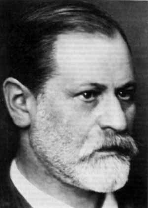

Primaire
Découverte guidée
Passages choisis et comparaisons. La lecture intégrale est déconseillée.
Sigmund Freud · Essai / conférences
En cinq conférences, Freud présente les origines de la psychanalyse et ses principaux concepts : refoulement, rêves, sexualité infantile, transfert et sublimation. Il s’appuie sur des cas cliniques et des comparaisons pour défendre sa méthode.

Ces leçons exposent les thèses de Freud. Les récits de cas, leurs interprétations et les résultats cliniques rapportés restent distincts d’une validation indépendante. Les analyses et les recommandations scolaires du dossier sont identifiées comme telles.
Comprendre la progression
Cinq étapes pour suivre le raisonnement. Les développements ci-dessous reprennent le résumé approfondi du dossier ; la leçon V présente la conclusion de l’ouvrage.
Première leçon : une origine clinique et un récit fondateur. Freud ouvre par un hommage à Breuer. La patiente souffre de troubles variés ; il rapporte que le récit de certaines scènes, sous hypnose et avec expression des affects, fait disparaître des symptômes. Le cas du refus de boire, rattaché au souvenir du chien buvant dans un verre, sert de démonstration narrative. La comparaison des monuments londoniens présente ensuite le symptôme comme trace commémorative. Freud reconnaît que l’explication initiale par les états hypnoïdes reste insuffisante et a été abandonnée.
Deuxième leçon : d’une difficulté technique à un modèle dynamique. Freud expose les limites pratiques de l’hypnose et relate un procédé d’insistance destiné à retrouver des souvenirs chez des patients éveillés. L’effort rencontré devient pour lui l’indice d’une résistance ; cette résistance lui permet de reconstruire un refoulement antérieur. Il oppose son explication par un conflit de forces à celle qu’il attribue à Janet. La scène de la jeune femme auprès de sa sœur morte exemplifie l’opposition entre désir et exigence morale. Le symptôme est présenté comme le substitut déformé d’une représentation refoulée.
Troisième leçon : révision et élargissement des moyens d’accès. Freud rectifie d’abord une présentation trop simple : ce qui surgit spontanément ne correspond pas toujours directement au souvenir recherché. Le déterminisme psychique justifie cependant, dans son raisonnement, l’exploitation des associations. Le mot d’esprit sert d’analogie pour une expression indirecte ; l’analyse des rêves oppose contenu manifeste et pensées latentes, puis présente condensation et déplacement. L’examen des actes manqués étend la méthode à la vie ordinaire. Freud attribue enfin une partie de l’opposition à sa théorie aux résistances de ses adversaires.
Quatrième leçon : centralité du sexuel et reconstruction de l’enfance. Freud défend l’importance des composantes sexuelles dans les névroses. Il élargit le sens du mot « sexualité » à des recherches de plaisir qui ne se réduisent pas à la reproduction. Il expose un développement par composantes, fixations et refoulements, puis interprète les liens familiaux en s’appuyant notamment sur Œdipe et Hamlet. Le conflit porte aussi sur les catégories elles-mêmes : ses interlocuteurs contestent ce qu’il accepte de nommer sexuel.
Cinquième leçon : relation thérapeutique et civilisation. La névrose est pensée comme une fuite hors d’une réalité insatisfaisante, avec retour à des formes antérieures du désir. L’art est présenté comme une possibilité de donner une forme partageable aux fantaisies. Le transfert fait revivre dans la relation au médecin des affects que Freud rattache au passé. La fin envisage des issues aux désirs : examen conscient et maîtrise, sublimation, satisfaction possible de certains désirs. La liste est présentée de façon un peu sinueuse dans cette traduction, car rétablissement d’une fonction et sublimation sont développés entre ses repères de numérotation. Il ne faut pas transformer cette fin en opposition simpliste entre réprimer tout désir et satisfaire tout désir.
Lire, comprendre, discuter
Les trois fiches du dossier sont conservées intégralement. Ces adaptations pédagogiques proposent des repères de niveau, sans valeur d’équivalence administrative ni de prescription officielle.
Découverte guidée
Passages choisis et comparaisons. La lecture intégrale est déconseillée.
Comprendre et justifier
Extraits accompagnés, concepts et premiers outils d’analyse argumentative.
Analyser et discuter
Étude intégrale possible avec un accompagnement lexical, historique et critique.
Les activités portent sur le texte et son raisonnement. Elles ne demandent ni récit intime, ni diagnostic, ni interprétation des rêves des élèves.
Édition et fiabilité
Le dossier situe les conférences en septembre 1909 et la publication en 1910, en s’appuyant sur les archives citées. Il signale les indications erronées « 1904 » et « 1908 » de l’EPUB.
Ebooks libres et gratuits est la provenance déclarée. Le colophon indique « Novembre 2003 » et les métadonnées « 2011-01-25 » ; leur relation n’est pas établie. L’édition imprimée source et l’ISBN ne sont pas identifiés.
L’ouvrage est étudié comme un essai historique et argumentatif. Les exemples éclairent les concepts ; leur force persuasive ne suffit pas à prouver une théorie générale.
À propos de cette adaptation
Ce site est un dérivé éditorial et pédagogique de Dossier_complet.md. Son dossier intégral reprend tout le contenu fourni. Les trois fiches scolaires proviennent de ce même document ; elles ne sont pas de nouvelles fiches ajoutées au site.
Les mentions « vérifié », « consulté » ou « contrôlé » reprises dans le dossier décrivent le travail rapporté par sa source. Elles ne constituent pas des vérifications documentaires supplémentaires effectuées pour ce site.
Le visuel fourni est conservé sans transformation. Il correspond à l’image déclarée comme couverture électronique, et non à une couverture imprimée identifiée. Les droits de réutilisation, le photographe et la date de cette image ne sont pas renseignés. Le portrait externe cité par le dossier reste accessible par un lien explicite, sans chargement distant automatique.